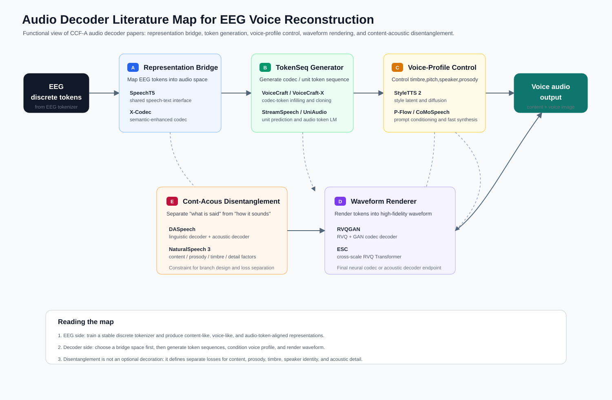

这份文档不再把 audio decoder 简单理解为最后一步的 waveform generator。对当前项目来说，更关键的问题是 audio 如何先被离散化、分层化，再成为 EEG token 的对齐目标。audio decoder 的位置因此被重新写成一条 token-first 链路：
audio waveform
-> audio tokenizer / codec encoder
-> semantic / prosody / voice / codec tokens
-> EEG-token alignment target
-> audio token LM / voice decoder foundation model
-> waveform renderer这个口径只保留 EEG 作为接口背景。V1 侧已经有 EEG token 和 voice token 的设计，这里关注 audio 侧：什么样的 audio token 值得被 EEG 对齐，什么样的 token 只适合留给后续 audio decoder 补全，哪些 foundation model 可以作为 V2/V3 的 decoder 参照。
严格按 CCF-A 收集会漏掉一些事实上的基础组件，例如 AudioLM、VALL-E、AudioPaLM、Moshi、SoundStream、EnCodec。文档因此采用两层标注：一层标出论文或系统的功能位置，另一层标出 status，包括 CCF-A / Nature、journal / TASLP、industry or arXiv foundation reference。这些 reference 的学术分量不同，但在 audio-token decoder 路线上承担的结构作用不同，不能简单用会议等级替代。

flowchart LR A["Audio waveform"] --> B["SSL semantic tokenizer<br/>HuBERT / wav2vec 2.0 / WavLM / Whisper"] A --> C["Prosody tokenizer<br/>F0 / energy / rhythm / envelope"] A --> D["Voice tokenizer<br/>speaker / timbre / style embedding"] A --> E["Codec tokenizer<br/>SoundStream / EnCodec / RVQGAN / FACodec / X-Codec"] B --> F["AudioTokenBundle"] C --> F D --> F E --> F F --> G["EEG-token alignment target<br/>semantic + prosody + voice first"] F --> H["Audio token LM / voice decoder foundation<br/>AudioLM / SoundStorm / VALL-E / VoiceCraft / MaskGCT / Moshi"] H --> I["Waveform renderer<br/>codec decoder / acoustic decoder"]
这张图的重点在左半边。audio waveform 先被拆成四类 token：semantic、prosody、voice、codec。EEG token 不直接对齐完整 codec residual token，也就是不把 full codec residual token 当作主要监督目标，因为低层 codec code 携带大量相位、细粒度谱纹理、录音条件和残差噪声；这些信息对 waveform fidelity 很重要，但通常不是非侵入式 EEG 能稳定恢复的神经信息。V2 更应该先证明 EEG token 能否对齐 semantic、prosody 和 voice token；V3 再把这些可解释 token 交给 audio token LM 或 codec decoder 补全波形。
V2 的 audio 侧最好形成一个统一的 AudioTokenBundle，而不是为每个 decoder 论文各写一套接口。
AudioTokenBundle
waveform_id
sample_rate
frame_times
content_units # HuBERT / wav2vec / Whisper / SpeechTokenizer semantic units
prosody_tokens # F0, energy, rhythm, envelope, voicing
voice_tokens # speaker, timbre, style, prompt-level voice identity
codec_codes # SoundStream / EnCodec / RVQGAN / FACodec / X-Codec codes
codec_group_names
valid_mask
voiced_mask这组 token 的用途并不相同。semantic token 更像内容标签，适合和 EEG content code 对齐；prosody token 更像连续语音动态，适合和 pitch、energy、rhythm head 对齐；voice token 更适合 retrieval 和 speaker / timbre alignment；codec token 则是 decoder 的物理接口。完整 codec stack 不应该被当成 EEG 的直接监督目标，尤其是 residual codebook。更稳妥的做法是只把 coarse codec、semantic codec 或 factorized codec 的可解释部分放入 alignment loss，把低层 residual 留给 decoder completion。
| Audio token 类别 | 主要来源 | 表达内容 | EEG alignment 角色 |
|---|---|---|---|
| semantic / content token | HuBERT, wav2vec 2.0, WavLM, Whisper, SpeechTokenizer | phoneme、syllable、word-like unit、speech content | content head、CTC/CE、contrastive semantic alignment |
| prosody token | F0, energy, duration, rhythm, envelope, voicing | pitch、intensity、speaking rate、stress、intonation | prosody head、F0/energy bin、temporal correlation |
| voice token | ECAPA, WavLM speaker embedding, FACodec timbre code, prompt encoder | speaker identity、timbre、style、vocal quality | speaker/voice retrieval、style/timbre contrastive loss |
| codec token | SoundStream, EnCodec, RVQGAN, FACodec, X-Codec, ESC | waveform reconstruction code、acoustic detail、residual detail | V3 decoder input；只把 coarse/factorized subset 作为 V2 alignment target |
这一层回答的问题是：不训练新 decoder 时，audio 可以先被投到什么 token 空间。这里的模型多数不是 TTS decoder，而是后续所有 voice decoder 的底层坐标系。
这一层回答的是 waveform 如何被压缩成可由 decoder 还原的 acoustic code。它们是 V3 waveform decoder 的基础，但其中只有部分 token 适合在 V2 直接和 EEG 对齐。
这一层不再问 audio 如何被编码，而是问离散 token 如何被生成、补全、编辑和渲染。它是 V3 真正接 waveform decoder 时最重要的文献组。
content token + voice prompt/token -> codec token 的代表路线。这一层保留原文档中的 TTS / style / acoustic decoder 论文，但它们的位置需要下移：它们不是 audio token alignment 的起点，而是 token 已经存在后的声音实现层。
voice token / speaker prompt -> acoustic realization。目前没有必要为了“Science”标签强行加入弱相关论文。对 audio decoder foundation 来说，Nature 2025 的 SEAMLESSM4T 比多数泛化的 multimodal foundation discussion 更贴近 speech-to-speech decoder。
V2 的目标是冻结或半冻结 audio tokenizer，把所有可用 audio 样本转成统一的 AudioTokenBundle，再让 EEG token 对齐其中可解释、可恢复的部分。
EEG token q0-q1 <-> audio envelope / onset / broad auditory response
EEG token q2-q3 <-> HuBERT / wav2vec / Whisper / SpeechTokenizer semantic units
EEG token q4 <-> F0 / energy / rhythm / prosody token
EEG token q5-q6 <-> speaker / timbre / style / voice embedding
EEG token q7 <-> no audio alignment; residual nuisance only训练目标可以从 retrieval 和 probe 开始：semantic unit prediction、F0/energy bin prediction、speaker retrieval、voice embedding contrastive alignment、coarse codec token sanity check。完整 waveform quality 不应成为 V2 指标。
V3 才进入真正的 audio decoder：
EEG tokens
-> predicted semantic / prosody / voice tokens
-> audio token LM or voice decoder foundation model
-> codec / acoustic tokens
-> waveform renderer这时 AudioLM、SoundStorm、VALL-E、VoiceCraft、MaskGCT、Moshi 才成为核心候选。V3 的关键不是让 EEG 预测所有 codec codes，而是让 EEG 提供足够好的 high-level conditions，再由 audio foundation decoder 完成 acoustic detail。
| 优先级 | 论文 / 系统 | 主作用 | 为什么优先 |
|---|---|---|---|
| P0 | HuBERT | semantic content token | 最直接的离散 content target |
| P0 | wav2vec 2.0 | speech SSL representation | speech semantic alignment 基础 |
| P0 | Whisper | robust speech content encoder | 跨数据集音频质量不稳时更可靠 |
| P0 | SoundStream | neural codec foundation | codec token / waveform renderer 基础 |
| P0 | EnCodec | neural codec backend | VoiceCraft / VALL-E 类路线的常用 backend |
| P0 | NaturalSpeech 3 / FACodec | factorized codec | content / prosody / timbre / detail 拆分最贴近本项目 |
| P0 | X-Codec | semantic-enhanced codec | semantic token 和 acoustic code 的桥 |
| P0 | AudioLM | audio token LM | semantic + acoustic token generation 主线 |
| P0 | SoundStorm | parallel token generation | 长音频和在线 decoder 更实际 |
| P0 | VALL-E | prompt-based neural codec LM | content + voice prompt 到 codec token |
| P0 | Voicebox | speech generation foundation | CCF-A foundation voice generation 代表 |
| P0 | SEAMLESSM4T | speech-to-speech foundation system | Nature 级系统边界和 evaluation 参考 |
| P1 | SpeechTokenizer | unified speech tokenizer | 层级 RVQ 与 semantic/acoustic 分层 |
| P1 | VoiceCraft | codec token infilling | 不完整上游 token 的补全路线 |
| P1 | MaskGCT | semantic-to-acoustic token decoder | 两阶段 token generation 清晰 |
| P1 | WavLM | full-stack speech representation | speaker / content 双用途 |
| P1 | BEATs | general audio tokenizer | auditory proxy 和非语音声音 |
| P1 | Moshi + Mimi | real-time speech foundation | streaming codec token 和实时链路 |
| P2 | StyleTTS 2 / P-Flow / CoMoSpeech | voice control / fast renderer | V3 voice realization 候选 |
| P2 | E2 TTS / F5-TTS / Mega-TTS 2 | flow / prompt TTS | decoder family 对照 |
| P2 | DASpeech / StreamSpeech / UniAudio | two-stage / streaming / universal audio generation | 结构补充和 ablation |
| Paper / system | Status | Year | Primary role | Token type | 对项目的直接用途 | Link |
|---|---|---|---|---|---|---|
| wav2vec 2.0 | NeurIPS | 2020 | semantic representation | semantic | content alignment baseline | NeurIPS |
| HuBERT | IEEE/ACM TASLP | 2021 | hidden-unit tokenizer | semantic | discrete content units | arXiv |
| WavLM | IEEE JSTSP | 2022 | full-stack speech SSL | semantic / voice | content + speaker features | arXiv |
| BEATs | ICML | 2023 | acoustic tokenizer | semantic / audio | auditory proxy token | Microsoft |
| Whisper | ICML | 2023 | robust speech encoder | semantic | content/language target | PMLR |
| SpeechT5 | ACL | 2022 | speech-text bridge | semantic | shared speech/text space | ACL |
| SoundStream | IEEE/ACM TASLP | 2022 | neural codec | codec | codec token foundation | arXiv |
| EnCodec | journal / industry reference | 2023 | neural codec backend | codec | V3 renderer backend | OpenReview |
| SpeechTokenizer | arXiv reference | 2023 | unified speech tokenizer | semantic / codec | layered semantic-acoustic token | arXiv |
| X-Codec | AAAI | 2025 | semantic-enhanced codec | semantic / codec | semantic-to-codec bridge | arXiv |
| NaturalSpeech 3 / FACodec | ICML | 2024 | factorized codec | semantic / prosody / voice / codec | factorized alignment target | PMLR |
| RVQGAN | NeurIPS | 2023 | high-fidelity codec | codec | waveform renderer | NeurIPS |
| ESC | EMNLP | 2024 | efficient speech codec | codec | low-bitrate renderer | ACL |
| AudioLM | arXiv / Google | 2022 | audio token LM | semantic / codec | semantic-to-acoustic generation | arXiv |
| SoundStorm | arXiv / Google | 2023 | parallel token LM | codec | fast audio token completion | arXiv |
| VALL-E | arXiv / Microsoft | 2023 | neural codec LM | codec / voice | prompt-based voice decoder | arXiv |
| VALL-E 2 | arXiv / Microsoft | 2024 | neural codec LM | codec / voice | stronger zero-shot TTS reference | arXiv |
| Voicebox | NeurIPS | 2023 | universal speech generation | voice / codec | foundation voice generator | NeurIPS |
| VoiceCraft | ACL | 2024 | codec token infilling | codec / voice | incomplete token completion | ACL |
| VoiceCraft-X | EMNLP | 2025 | multilingual voice cloning | codec / voice | multilingual prompt decoder | ACL |
| AudioPaLM | arXiv / Google | 2023 | speech-language foundation | semantic / codec | listen-and-speak controller | arXiv |
| Moshi + Mimi | arXiv / Kyutai | 2024 | real-time speech foundation | codec / voice | streaming decoder reference | arXiv |
| MaskGCT | arXiv reference | 2024 | masked codec transformer | semantic / codec | semantic-to-acoustic decoder | arXiv |
| E2 TTS | arXiv / Microsoft | 2024 | flow TTS | voice / acoustic | decoder family comparison | arXiv |
| F5-TTS | ACL / arXiv | 2025 | flow TTS | voice / acoustic | open voice decoder reference | arXiv |
| Mega-TTS 2 | arXiv reference | 2023 | zero-shot TTS prompt model | voice / prosody | prompt and timbre control | arXiv |
| UniAudio | ICML | 2024 | universal audio generation | codec / audio | multi-audio generation reference | PMLR |
| UniAudio 1.5 | ACM MM | 2024 | LLM-driven codec decoder | codec | few-shot audio task learner | ACM DL |
| StreamSpeech | ACL | 2024 | streaming S2ST decoder | semantic / unit | online token path reference | ACL |
| StyleTTS 2 | NeurIPS | 2023 | style diffusion | voice / prosody | voice control module | NeurIPS |
| P-Flow | NeurIPS | 2023 | prompt-conditioned flow | voice / acoustic | fast zero-shot realization | NeurIPS |
| CoMoSpeech | ACM MM | 2023 | consistency synthesis | voice / acoustic | low-step renderer | Project |
| DASpeech | NeurIPS | 2023 | content-acoustic decoder | semantic / acoustic | two-stage decoder design | NeurIPS |
| SEAMLESSM4T / Joint speech and text machine translation | Nature | 2025 | speech-to-speech foundation system | semantic / speech | system boundary and evaluation | Nature |
| Neural speech decoding with speech synthesis | Nature Machine Intelligence | 2024 | neural decoding boundary reference | speech parameters | synthesizer-assisted decoding reference | Nature |
V2 的核心不是把 EEG token 直接推到 waveform，而是建立一套可靠的 audio token target。audio token 至少要分成 semantic、prosody、voice 和 codec 四类；前三类是 EEG alignment 的主对象，codec token 是后续 decoder 的物理接口。完整 residual codec code 不应被当作 EEG 必须恢复的信息。
因此，当前 audio decoder roadmap 可以压成一句话：
先把 audio 拆成可解释 token，
再让 EEG token 对齐 semantic / prosody / voice，
最后用 audio foundation decoder 补全 codec detail 并渲染 waveform。